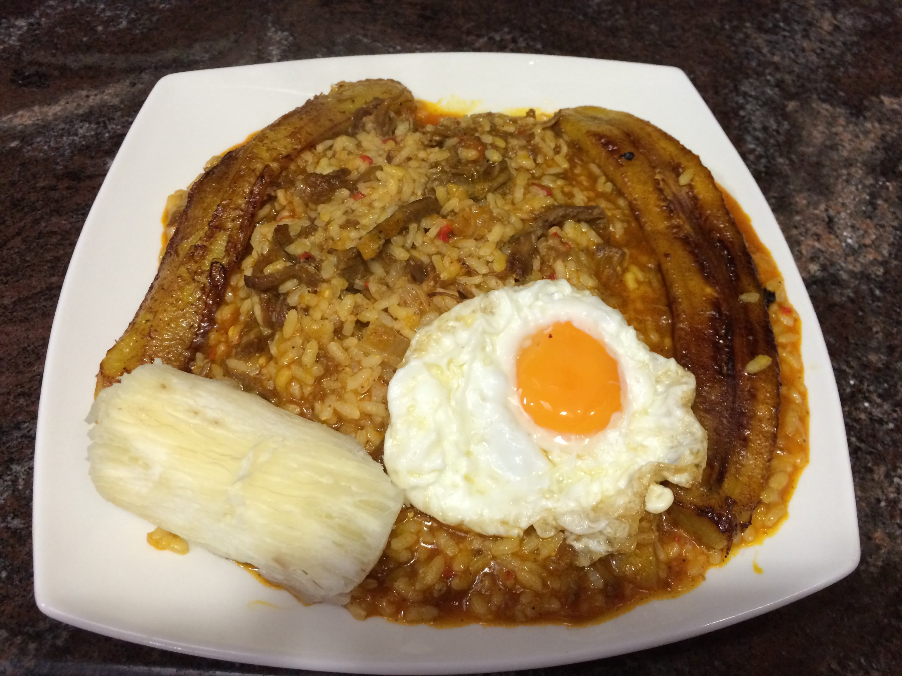

Majadito

El nombre de este plato proviene de su principal ingrediente: la carne y el sufijo diminutivo “ito”, muy presente en la jerga boliviana. En Bolivia, “Majau” significa “golpeado” o “majado“, cosa que se hace con las carnes antes de hacer el majau en un tacú o mortero de madera. El majadito es originario de Santa cruz (departamento del oriente boliviano). Es muy sabroso y fácil de preparar.
Ingredientes
1 kg. de charque (carne de res deshidratada con sal).2 tazas de arroz
6 tazas de agua
0.5 tazas de aceite
1 cebolla picada
1 pimiento morrón
2 tomates pelados y cortados en trozos pequeños
3 dientes de ajo molido
2 cucharadas de urucú (planta roja de la amazonía, con propiedades colorantes)
3 bananas para freír
6 huevos
sal y pimienta
1 cola de cebolla verde picada (cebollín)
IngredientesPreparación
IngredientesLavar la carne (charque) varias veces, a fin de reducir la sal. Hervir la carne. Sacar la carne y cortarla en finos filetes. Añadir arroz y hacerlo cocer. Una vez cocida la carne, freírla en una sartén, en aceite caliente, hasta que se dore. En una sartén aparte, freír la cebolla, el cebollín, el pimiento morrón, el tomate y el colorante rojo. Cuando todo esté cocido, mezclar el arroz con la carne y las legumbres. Freír los huevos (estrellados). Freír las bananas. Servir el arroz (con verduras y charque) con un huevo estrellado y dos lonjas de banana frita.